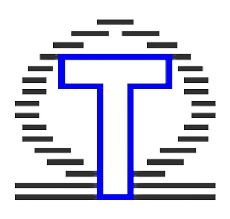

OmegaT es una herramienta de memoria de traducción, es decir, un
programa que registra equivalencias entre lenguas, una
aplicación libre escrita en Java. La herramienta está pensada
para ser utilizada por traductores profesionales.
El usuario copia los documentos fuente, las memorias de
traducción y los glosarios de los que dispone en las carpetas
específicas del proyecto que va a traducir. Al abrir un
proyecto, OmegaT extrae el texto a traducir de los documentos
que reconoce. Al tiempo que se traduce cada segmento, OmegaT
añade el texto traducido a la memoria de traducción. Durante la
traducción de un segmento, las coincidencias parciales con la
memoria de traducción y los glosarios se muestran en una ventana
adyacente.
El traductor puede insertar las coincidencias parciales usando
el teclado. Opcionalmente, se pueden insertar automáticamente
aquellas coincidencias que se encuentren por encima de un umbral
predefinido por el usuario. El traductor puede cambiar en
cualquier momento a otro documento en el mismo proyecto, usando
el visor de archivos de proyecto. También puede cambiar a otro
segmento en el mismo archivo, usando el teclado o haciendo doble
clic en el segmento deseado. Siempre que se añadan al proyecto
memorias de traducción o glosarios, o cuando se hayan realizado
cambios sobre esos archivos, el traductor debe cargar de nuevo
el proyecto, para que OmegaT reconozca los segmentos que se han
añadido nuevos. También se debe cargar el proyecto de nuevo si
se realiza algún cambio en las reglas de segmentación durante el
proceso de traducción.